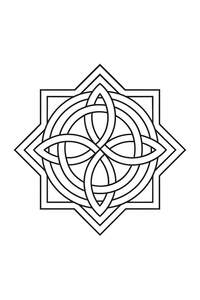

Trade Mark Journal No.2025/042 17 October 2025
UK00004273817 5 October 2025 (14,16,25,35)

- Class 14
- Jewellery; Necklaces [jewellery]; Brooches [jewellery]; Pendants [jewellery]; Bracelets [jewellery]; Ornaments [jewellery]; Amulets being jewellery; Amulets [jewellery]; Trinkets [jewellery]; Gold jewellery; Charms [jewellery]; Chains [jewellery, jewelry (Am.)]; Rings [jewellery, jewelry (Am.)]; Medallions [jewellery, jewelry (Am.)]; Jewellery boxes; Jewellery chain of precious metal for necklaces; Jewellery made from gold; Jewellery made from silver; Clasps for jewelry; Jewellery cases.
- Class 16
- Cardboard packaging; Packaging materials; Containers of cardboard for packaging; Packaging containers of card; Packaging containers of paper; Gift packaging; Paper pouches for packaging; Containers of paper for packaging purposes; Paper envelopes for packaging; Bags [envelopes, pouches] of paper or plastics, for packaging.
- Class 25
- Clothing; Embroidered clothing.
- Class 35
- Business management of wholesale and retail outlets; Online retail store services in relation to clothing; Retail services in relation to jewellery; Retail services in relation to clothing; Retail services relating to jewelry; Online retail services relating to jewelry; Online retail services relating to clothing; Retail services relating to clothing; Retail services in relation to fashion accessories; Retail services connected with the sale of clothing and clothing accessories.
Harry Llewelyn John Ballinger